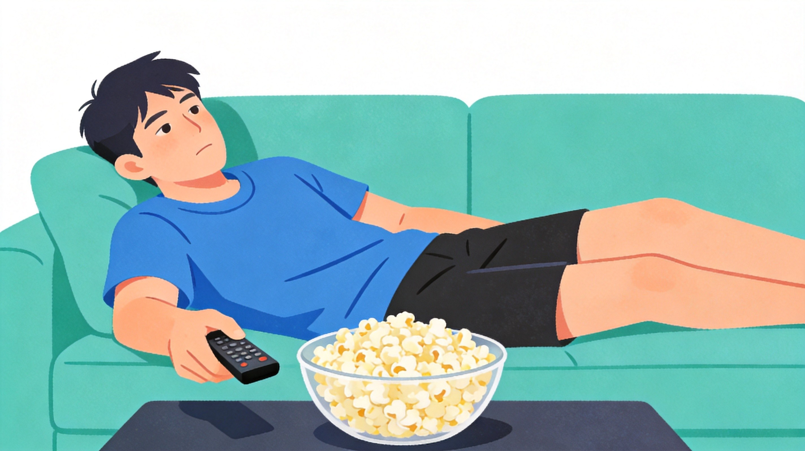
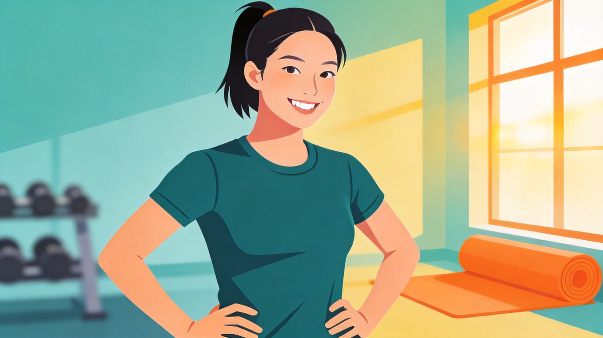
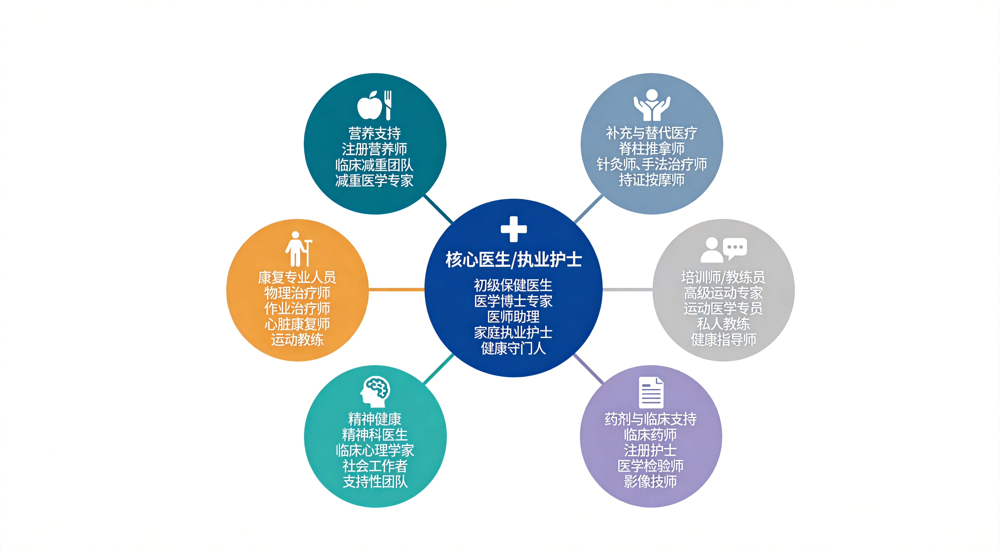

私人教练的角色和执业范围
本章导读
本章介绍ACE认证私人教练的角色、执业范围和职业责任，并说明私人教练在健康照护联盟中的协作位置以及职业发展路径。清楚这些内容，是安全、合规地开展私人教练服务的基础。
学完本章，你应当能够： 解释ACE认证私人教练的角色和执业范围；② 区分私人教练可以提供的服务与需要转介的事项；③ 说明私人教练在健康照护联盟中的协作位置；④ 说明持续教育、学位和专业资质对职业发展的作用。
ACE 私人教练的专业性，由四件事共同定义： 在法定执业范围内服务；② 遵守 ACE（American Council on Exercise，美国运动委员会）职业道德准则；③ 在健康照护联盟中找到自己的协作位置；④ 通过持续教育保持职业长期发展。
📋 知识速览（预习区）
本章内容概览
| 板块 | 核心问题 | 高频考点 |
|---|---|---|
| 1. 法定执业范围 | 我合法能做什么、不能做什么 | 5 件禁止：不诊断、不开菜单、不治疗、不主导康复、不开药 |
| 2. 职业道德准则 | 法律允许的事里，应该怎么做 | HIPAA 隐私 / 2年20小时2.0 CECs / 安全优先：消除＞告知 |
| 3. 健康照护联盟 | 我和医生、营养师、康复师的关系 | 医师=看门人 / NCCA 质量标准 / 双向转介 |
| 4. 职业发展 | 持证之后往哪儿走 | 深耕专项 / 学历深造 / 跨界资质（如 RD、SNC） |
关键数字
| 数字 | 含义 |
|---|---|
| 4 + 1 | NCD 可变危险因素：身体活动不足 + 吸烟 + 营养不良 + 过度饮酒 + 久坐行为 |
| 2年 / 20小时 / 2.0 CECs | ACE 续证周期 + 每周期最低继续教育时长 + 继续教育学分 |
| 2030 | WHO 全球降低成年人和青少年久坐不动比例的目标年 |
| 122,007 | Mandsager et al. 2018 心肺适能与全因死亡率研究样本量（克利夫兰诊所） |
| 10% | 健身教练预期就业增长率（2016-2026，BLS），高于所有职业平均 7% |
| ≥5 | ACE 道德准则核心条目数 |
执业范围速览
| 五件绝对禁止 | 五件合规可以做 |
|---|---|
| 1. 诊断病症/病因 | 1. 健康筛查+风险评估 |
| 2. 开个性化饮食菜单 | 2. 一般性营养科普 |
| 3. 治疗/主导康复 | 3. 康复结束后的运动支持 |
| 4. 监测临床康复指标 | 4. 客观记录+转介报告 |
| 5. 心理治疗/超出资质提供补充剂或药物建议 | 5. 行为改变指导 |
学习路线
| 站点 | 内容 |
|---|---|
| 第一站 | 理解行业大背景（板块 1） |
| 第二站 | 明确法律红线（板块 2） |
| 第三站 | 守住道德规范（板块 3） |
| 第四站 | 找到协作位置（板块 4） |
| 第五站 | 规划职业路径（板块 5） |
每一站后面都配小节回顾与练习，每节读完即时自测，章末有完整收口总结。
名词与缩写
| 缩写 | 全称 | 中文 |
|---|---|---|
| ACE | American Council on Exercise | 美国运动委员会 |
| NCCA | National Commission for Certifying Agencies | 美国国家认证机构委员会 |
| NCD | Non-Communicable Diseases | 非传染性疾病 |
| HIPAA | Health Insurance Portability and Accountability Act | 美国健康保险流通与责任法案 |
| BLS | Bureau of Labor Statistics | 美国劳工统计局 |
| CPR | Cardiopulmonary Resuscitation | 心肺复苏 |
| AED | Automated External Defibrillator | 自动体外除颤器 |
| CEC | Continuing Education Credit | 继续教育学分 |
| RD | Registered Dietitian | 注册营养师 |
| SNC | Senior Nutrition Coach | 高级营养教练 |
| GTO | Golgi Tendon Organ | 高尔基腱器官 |
| ROM | Range of Motion | 关节活动度 |
| NMSC | Non-Melanoma Skin Cancer | 非黑色素瘤皮肤癌 |
导入：身体活动的健康价值与公共健康背景
在进入执业规则前，先通过表 1-4 身体活动相关的健康益处，奠定了私人教练的行业价值，这里有两个核心知识点，也是 ACE 对行业的核心定位：
1. 两大全覆盖原则：
身体活动的益处覆盖全生命周期+全人群，从儿童、青少年、成年人到老年人，无一例外；益处不仅局限于身材改变，身体功能、认知能力和情绪状态的全面改善，从降低慢性疾病风险，到全面提升生活质量，都和规律的身体活动直接相关。（PA（身体活动）= 3岁到老的"全龄全益"运动）
身体活动的益处覆盖全人群、全生命周期，没有谁不需要它。当客户问"我练这个能瘦吗？"时，应当告知规律运动不仅能改善体重，还能提升睡眠质量、减轻焦虑、改善认知功能，降低多种慢性病风险。表1-4是ACE对私人教练行业价值的官方背书，运动的好处从3岁到老年全覆盖。将私人教练的价值局限于"塑形教练"，是对这一职业定位的严重窄化。
定期身体活动相关的健康益处
表1-4
| 儿童和青少年 | 成年人和老年人 |
|---|---|
| 改善骨骼健康（3-17岁） | 降低全因死亡风险 |
| 改善体重状态（3-17岁） | 降低心血管疾病死亡风险 |
| 改善心肺和肌肉健康（6-17岁） | 降低心血管疾病风险（心脏病和中风） |
| 改善心脏代谢健康（6-17岁） | 降低高血压风险 |
| 改善认知能力（6-13岁）* | 降低Ⅱ型糖尿病风险 |
| 降低抑郁风险（6-13岁） | 降低不良血脂状态风险 |
| 降低多种癌症风险（膀胱癌、乳腺癌、结肠癌等） | |
| 改善认知能力* | |
| 降低患痴呆症风险（含阿尔茨海默症） | |
| 改善生活质量 | |
| 减少焦虑 | |
| 降低抑郁风险 | |
| 改善睡眠 | |
| 减慢或降低体重增长 | |
| 减肥（结合低卡路里摄入时） | |
| 预防初次减肥后体重反弹 | |
| 改善骨骼健康状况 | |
| 改善身体机能 | |
| 降低跌倒风险（老年人） | |
| 降低跌倒受伤风险（老年人） |
注释:咨询委员会将身体活动的健康益处的证据分为有力证据、中等证据、有限证据或不可分级证据。此表中仅包含具有有力证据成中等证据的结果。
*有关认知和大脑健康的其他组成部分,请参见《美国居民身体活动指南》(第2版)(Physical Activity Guidelines for Americons(2nd ed.)的表2-3。
转自美国卫生和公众服务部(2018年)发布的《美国居民身体活动指南》(第2版)(Physical Activily Guidelines for Amerkons [2nd ed.ttos/Mhatgoaguidelineslecond-edinpdfPhysicol Activity Guidelines2ndeditionpdf)（老中青三代，健身八大益：心脑代谢骨骼肌，跌倒失眠焦虑郁（压））
3. 非传染性疾病（NCD）的核心诱因——"四加一" 风险因素：

身体活动不足、吸烟、营养不良、过度饮酒，是导致非传染性疾病（NCD）的四大可变危险因素；久坐行为正被学界提议作为第五个独立风险因素纳入，形成"四加一"模型。 据WHO数据，非传染性疾病每年导致约4100万人死亡，
占全球死亡总数的71%，远超传染性疾病， 其中心血管疾病、癌症、糖尿病、慢性呼吸道疾病是主要致死病因。（NCD 四加一：动少、烟、酒、吃错 + 久坐行为（Sedentary Behavior））
NCD四大可变危险因素全部和生活方式相关，这是私人教练存在的意义。例如当客户问"我为什么会得糖尿病？"时，需要理解NCD是可变危险因素共同作用的结果。教练可以帮助干预其中可改变的因素，如身体活动不足，但病因分析需要医疗专业人士。一个常见的误区是教练承担"诊断者"角色，直接告诉客户病因或做过度假设如"你不运动导致的"，这是对病因的过度简化。
可将非传染性疾病的可变危险因素看作多条相互作用的路径。身体活动不足、吸烟、有害使用酒精和不健康饮食均会提高风险，久坐行为还可能进一步增加健康负担。
4. 公共健康危机与权威指南
世卫组织数据：身体活动不足是 21 世纪最严重的公共健康问题，心肺功能低下引发的死亡率，远高于我们熟知的肥胖、吸烟、高胆固醇、糖尿病。与之相反心肺功能极高的个体具有最低的全因死亡率。

图1-1
Steven Blair(2009年)将身体活动不足称为21世纪最大的公共健康问题。与肥胖、吸烟、高胆固醇和糖尿病相比,心肺适能低下导致的死亡率要高得多。克利夫兰诊所的研究人员对122.007名患者进行了一项回顾性研究,以评估心肺适能与全因死亡率之间的关系,并评估与适度心肺适能水平相比,极度心肺适能的相对益处或危害。他们发现,经风险调整的全因死亡率与心肺适能之间存在负相关关系,其中较低心肺适能的调整后死亡率风险大于或等于心血管疾病、糖尿病和吸烟的死亡率风险(Mandsager等人,2018年)。此外，Mandsager和同事(2018年)发现,具有极度心肺适能的个体(被归类为心肺健康比年龄和性别平均值高2个标准差)具有最低的经风险调整的全因死亡率,并且益处扩展到高血压或70岁及以上的患者。这项研究支持Blair(2009年)报告的发现,并为实现和维持高水平心肺适能的重要性(Mandsager等人,2018年)提供了支持)
一句话总结：要活着，就不能”没心没肺“。心肺功能的好坏和死亡率直接相关。（122,007：克利夫兰诊所大样本研究，心肺适能2SD极高，全因死亡风险最低）
较低心肺适能的死亡风险≥糖尿病和吸烟的死亡风险，这就是为什么教练要把心肺训练放在首位。2030年前降低久坐比例是WHO的全球目标，私人教练可以在这个目标中发挥推动作用。
● 同时参照2018 年美国居民身体活动指南，该指南针对儿童、成年人、老年人、妊娠期 / 产后女性、慢性疾病人群，制定了改善心肺功能、肌肉健康、骨骼强度、平衡力与柔韧性的运动方案，核心目标是 2030 年前全球降低成年人和青少年久坐不动的比例。（2030：全球健身目标年，久坐比例要降低）
全球行动目标如同一张共同的路线图，为各国制定政策、建设环境和评估身体活动促进工作提供方向。
结合教材逻辑我们可以思考：
如果健身行业的定位是为全人群、全生命周期提供身心一体化健康服务，那这个行业具备极强的可持续性，不存在所谓 "行业冬天"；但如果仅局限于局部增肌、减脂的单一需求。服务人群、方案空间都会极度受限。
图1-2
1 ACE私人教练认证
1.1 “执业范围”的定义
执业范围界定了特定专业人员可以提供的服务。ACE认证私人教练应在表1-5所列范围内工作，并同时遵守所在地法规和机构规定。超出执业范围可能产生法律、伦理和职业责任。（执业范围 = "法律围墙"，围墙内是教练的合法服务区，围墙外是其他专业人士的专属领地）
执业范围是私人教练的专业边界。超出范围提供受监管的医疗、营养或心理健康服务，可能违反当地法律和ACE职业规范。教练不对疼痛原因作医学诊断；应根据筛查结果、客户反应和必要的医学许可，决定调整训练或转介。会转介的教练才是合格的教练。
执业范围如同道路的车道与护栏，使不同专业人员在各自职责范围内安全协作。
表1-5
| 执业范围外的行为 | 执业范围内的行为 |
|---|---|
| 诊断病症或疾病 | 遵循由适当管理机构（如美国妇产科医师学会和美国糖尿病协会）提出的关于疾病和紊乱的运动规划的公认准则评估运动受限情况通过健康筛查和健身评估确定潜在的危险因素根据需要，将客户转介给相应的医疗保健专业人员遵守由客户的医生或其他医疗保健专业人员提供的免责就医授权书中列出的指导和限制 |
| 规定饮食或营养补充剂 | 将客户转介给注册营养师，以进行膳食计划或特定饮食计划提供关于健康的循证营养的一般信息（例如《美国居民膳食指南》Dietary Guidelines for Americans） |
| 治疗受伤或疾病患者，或在客户受伤后帮助客户康复 | 使用运动计划来帮助客户改善整体健康状况帮助客户遵从医生或理疗师的建议在客户的康复治疗结束后，设计一个运动计划根据需要，将客户转介给相应的医疗保健专业人员 |
| 监督医疗转介绍客户的临床进展 | 记录进展情况，并在获得客户许可后向相应的医疗保健专业人员或医生报告遵循医生、理疗师、注册营养师或其他医疗保健专业人员的建议 |
| 咨询客户 | 使用指导技巧，支持客户改变行为习惯（例如，增加身体活动和采用健康的饮食习惯）提供一般健康和保健信息根据需要，将客户转介给相应的医疗保健专业人员 |
1.2 ACE认证私人教练的执业范围
这些行为是教材明确的执业红线，私人教练无资质开展，对应专业人员分别为：
1. 禁止诊断任何疾病（专属执业医师）（诊断 = 医生的活，教练：做好医生的小帮手）
当客户说"我膝盖疼，你帮我看看是什么问题"时，正确的做法是说"膝盖疼痛的原因需要专业医生诊断，我可以帮你做筛查，必要时转介"。根据经验判断"可能是半月板损伤"属于越界诊断行为。需要警惕的误区是把"评估"当成"诊断"——评估是教练的执业内容，但诊断病因属于医疗专业人员。
私人教练可以把客户目标、医学许可和运动原则转化为可执行的训练安排，但不负责医学诊断。
2.禁止开具个性化饮食菜单（专属注册营养师）（开菜单 ：营养师的的活。教练只做“传道人“。）
教练可以推荐"ChooseMyPlate.gov"等官方工具，讲解基础营养知识，但不能开菜单，也不能推荐补充剂剂量。美国居民膳食指南和MyPlate是教练可以使用的官方工具。营养服务的执业边界受当地法规管理，超出一般营养教育的服务，应由当地认可的合资格专业人员提供。
3. 禁止治疗受伤客户、主导客户康复（专属康复治疗师）（治疗康复 ：物理治疗时的活，教练只做康复师的好帮手：）
4.禁止监测医疗转介客户的病情恢复进度（专属临床医师）（临床监测 ：医生的活，教练只做记录"运动相关进展"）
教练应客观记录训练表现和运动反应；不应将记录解释为医学诊断或临床康复评定。记录内容只涉及运动表现、功能状态，不涉及临床医学指标。
5. 禁止提供专业（如心理）咨询（专属持证咨询师）（心理咨询 = 心理咨询师的活，教练只能："倾听+保密+转介"）
教练可以共情倾听，但解决方案要转介给专业人士。教练的行为改变技术是循证的，但仅限于支持性辅助，不能代替心理健康问题的诊断和治疗。
私人教练可以倾听、共情并提供一般性支持，但心理评估和治疗应由合资格的心理健康专业人员完成。
1.3 ACE认证私人教练的知识、技能和能力
很多同学在看以上那么多”不能做“的时候都会觉得气馁，感觉被命运掐住了喉咙，不能大展身手。但”不以规矩，不能成方圆“，执业规范的核心是划定专业边界，明确各行业分工：教练不得开展医学诊断，正如医生不会教会员做深蹲和硬拉。跨执业范围服务，将带来安全与法律风险。但确实，在工作实践中，单纯以职责边界回绝客户的问题和诉求，容易造成较差的服务体验。恪守执业边界，并不等同于专业价值受限，在许可范围内，仍存在大量核心工作：
1.评估客户健康危险因素，并及时转介绍 （医生的好帮手）（转介 = 教练的核心技能之一，是专业能力的体现）
私人教练需要保持风险识别意识，发现超出执业范围或需要进一步评估的情况时及时转介。
2.提供营养知识普及（营养师的好帮手）（科普 = 可以，处方 = 不行）
私人教练可以讲解公开的健康饮食指南，但个体化治疗性膳食应由具备相应资质的营养专业人员制定。
3. 辅助客户遵从理疗师、康复师制定的运动计划，或在客户康复期后执行配套运动方案；（物理治疗师的好帮手）
（在医学许可和明确限制内开展运动指导；诊断和治疗由相应的合资格专业人员负责。）
客户从物理治疗师那里"毕业"后，才能来找教练做功能性训练。康复期客户的运动方案遵循医生出方向、教练执行细节的协作模式。
对于获得医学许可的客户，私人教练应在医疗人员给出的限制和建议范围内设计并实施运动计划。
4.客观记录客户的身体、伤情发展状况（记录"练了多少"，不记录"好了多少"）
私人教练记录运动表现和训练反应，不根据这些记录作出医学诊断。
5.运用运动指导技巧、基础行为改变技巧辅助客户（行为改变 = 教练的专业，深度心理干预 = 咨询师的专业）
行为改变方法可以支持客户建立运动习惯，但不能代替心理健康问题的诊断和治疗。
● 因此，教练的角色是医疗团队（医师、营养师、康复师、心理咨询师）的辅助者与转介枢纽。教练需要判断客户是否需要马上转介绍，并接收由上述医疗保健专业人士转介绍而来的客户，为其设计训练方案。
执业范围的核心原则
1. 绝不跨界从事其他医疗健康保健专业人士的专属服务；
2. 为客户制定的运动方案，不得与客户的健康照护团队建议相悖，必须严格配合医疗团队的要求。（执业范围两原则：不越界 + 遵医嘱）
教练必须遵守医疗专业人员提出的运动限制和注意事项；若限制不清，应在训练前请客户进一步确认。
私人教练是健康照护联盟中的协作者，需要尊重其他专业人员的职责和建议。
本章严格规定了教练的职业范围（法律）和道德准则（合规持证+安全，隐私，转介绍）
那为什么要严格规定教练的执业范围？
法律风险：职业范围划定了私人教练可以提供的服务。超出资质提供医疗诊断、治疗或治疗性营养处方，可能违反当地法律、导致职业责任，并触发ACE纪律程序。
专业边界：教练的核心职能是帮助健康大众及被医疗专业人士治疗后允许参与运动的人群进行运动训练，而非疾病诊断、治疗或心理干预，越界不仅不专业，还可能误导客户。
客户安全：让客户接受专业医师 / 治疗师的诊疗，再由教练配合做运动支持，是最安全、最有效的路径。
1.4 职业责任和道德规范
拓展知识
ACE道德准则
ACE道德准则管理ACE认证的专业人员在与客户、公众或其他健康和运动专业人员合作时应遵守的道德和专业标准。注册参加ACE认证考试的每个人都必须同意在整个考试过程中遵守ACE道德准则，并且在获得ACE认证后作为专业人员遵守该准则。考试应试者和ACE认证的私人教练必须全面了解该准则以及违反每项原则可能造成的后果以及潜在的公众伤害。
道德准则是法律允许范围内，保障职业存续的核心规范，从考试阶段到持证执业全程遵守，也是 ACE 考试的高频考点，核心要求如下：（道德准则 = 法律的"温柔补充"：法律告诉你不能做什么，道德告诉你应该怎么做）
道德准则让从业者从"合法"走向"专业"。持续教育是进入健康照护联盟的"准入门槛"。
执业范围回答“可以做什么”，道德规范进一步说明“应当怎样做”。合法是最低要求，专业人员还应承担伦理责任。
1. 考试与继续教育规范
1）必须诚信的参与认证考试；
2）持证后每两年需完成至少 20 小时 ACE 认可的继续教育，获取 2.0 个继续教育学分，同时必须保持CPR 证书持续有效、按时更新。
例如当证书快到期但忙于工作忘了续证时，正确的做法是立即查看ACE官网，了解续证截止日期和CECs要求，制定补学分计划。"没事，先用过期证书顶着"是严重的违规行为。证书过期后不可继续执业，这是一个需要警惕的常见误区。
执照期和续期
ACE认证的有效期为两年，从获得该认证之日起计算，于当月最后一天到期。要进行新两年周期的认证续期，ACE认证的专业人员必须完成至少20小时的ACE批准的持续教育学分（2.0 CEC），并持有当前的心肺复苏（CPR）证书，且如果持证人生活在北美，则必须能够正确使用自动外部除颤器（AED）。
持续教育是医疗保健联盟的标准要求，有助于确保专业人员与各自领域内的最新研究保持同步，以保护公众。鉴于健身行业的动态性和运动科学的快速发展研究，运动专业人员必须定期完成持续教育。通过完成持续教育，ACE认证的专业人员可以了解运动科学的最新发现，并确保其服务与最新的健身和医疗保健指南保持一致。（续证"222"：2年周期 + 20小时 + 2.0 CECs + CPR有效 + AED合规（北美））
取得认证是职业起点。持续教育和续证用于更新知识、保持能力，并证明专业人员持续履行职业责任。
2. 客户隐私保护（HIPAA 法案）
私人教练应将客户健康与训练信息视为敏感信息并严格保护，参照HIPAA（美国《健康保险携带和责任法案》）的隐私保护原则进行管理。除客户适当授权、法律要求或紧急安全需要外，不应向无关第三方披露。HIPAA是否直接适用于某位教练，取决于其工作场景和法律身份。（客户信息默认应保密；披露前应确认授权、法律依据和必要范围。）
客户的健康信息是"最高机密"，宁可多保密，不可多透露。例如当客户配偶打电话询问妻子的训练进展和健康状况时，正确做法是告知"对不起，没有您妻子的授权，我不能透露她的训练信息。如果有训练方面的疑问，麻烦让她本人直接和我沟通会更合适。""她最近减重效果不错"这样的回应属于泄露隐私的错误做法。客户表现好并不意味着信息可以公开——这属于隐私保护的常见误区。
客户健康信息应像其他敏感健康资料一样受到严格保护，只能在获得适当授权或法律要求的情况下披露。
3. 客户安全保障（最高优先级原则）
私人教练需不计代价、最大限度降低客户运动风险，这是 ACE 道德准则的核心：
○ 保证训练设施设备完好维护，地面与器械保持清洁、干燥；
○ 必备应急计划与急救用品，这是执业基础配置；
○ 精准识别高风险客户并及时转介，合理设定运动强度避免运动损伤；
○ 考试答题逻辑重点：若题目中多个选项均符合安全要求，需选择能最大程度消除风险的答案。例如跑步机故障，"搬走故障跑步机" 优于 "张贴故障提示"，考点核心是考察我们 "极致保障客户安全" 的执业理念。
(安全：所有运动专业人员都应尽可能地减少每个人在健身设施中面临的风险。这包括配备具有适当间隔和良好工作状态的设备;有适用于便携式设备(包括稳定球、哑铃和壶铃)的机架、架子、挂钩或其他放置点;并确保地板和设备已经过清洁和维护且整洁干燥。运动专业人员还应注意设施的清洁度,包括使用后可使用擦拭巾或其他灭菌器来清洁设备。在发生伤害或事故时,应急计划、AED和适当的急救用品至关重要。
私人教练具有额外的客户特定风险管理责任,从第一次会议开始时,其应进行健康历史访谈,以便在运动前确定是否需要将客户转介绍给医生或客户是否存在针对某些运动的限制条件或禁忌症。私人教练还需要为初始运动计划的设计以及运动计划修改确定适当的运动及强度级别。然后,通过帮助客户以安全有效的方式进行运动且适当进阶,私人教练可以最大限度地降低客户受伤的风险,并提高服务质量。即使有最好的风险管理计划,也可能发生伤害和事故。因此,ACE建议所有ACE认证的专业人员购买职业责任保险,以便当客户在训练期间受伤时提供保护(见第16章)。)（安全铁律——Eliminate（消除） > Inform（告知））
跑步机故障时，搬走优于贴告示——这就是ACE的安全哲学：极致的安全意识。例如发现弹力带有轻微裂痕但还能用时，正确做法是立即移出训练区域。贴个告示"请小心使用"是错误的应对方式。"还能用就先凑合"是最大的安全隐患。安全铁律的核心是消除风险，而非仅仅提示风险。
风险管理的重点是消除危险或有效隔离危险。仅提醒客户注意，通常不能替代实际的风险控制措施。
4. 及时转介原则
当服务内容超出自身执业边界、专业能力，或客户训练目标远超自身执教范围时，必须转介至医生、营养师、康复师，或更适配的专业私人教练。
转介绍
医疗保健专业人员（包括私人教练）务必要了解他们的专业资格和界限，并且始终将所需服务超出其执业范围的客户转介绍给适当的合格医疗保健专业人员。这样做可确保客户得到合格医护人员的适当护理，并防止医疗保健专业人员提供在其教育、培训、证书和/或法律权利范围之外的服务。有时，私人教练需要进一步调查，以确定是否需要转介绍。例如，如果客户想要以比安全减肥建议快得多的速度减肥，私人教练可以首先解释健康的减肥率，并与其一起确定一个安全可行的目标。如果客户对这个新目标感到满意，则私人教练可以设计一个计划来帮助客户实现目标。然而，如果客户仍然希望实现原来的减肥目标和时间线，则私人教练应该将其转介绍给RD、医生或其他相应的医疗保健专业人员。
其他医疗保健专业人员也可将客户转介绍给私人教练。例如，医生可向患者提供运动指南，然后将其转介绍给ACE认证的私人教练，根据医生的指导制定个性化的运动计划。在这种情况下，私人教练应根据双方约定的频率，向医生定期提供有关客户进度和计划方向的最新信息。在获得客户的书面许可的前提下，务必要将客户转介绍给适当的医疗保健专业人员，且涉及的所有医疗保健专业人员务必定期回复每名客户的进展。（转介 = 专业能力，不是"没本事"）
转介是双向的。教练发现超出执业范围的问题时应及时转介，也可在获得适当医学许可和限制信息后，接收医疗专业人员转介的客户。例如当客户希望每周减重3斤（远超健康减重速度）时，直接答应并拼命给客户安排高强度训练是错误的。正确做法是先解释健康减重速率（每周0.5-1kg），协商可行目标；若客户坚持极端目标，则转介RD或医生。担心转介显得"没本事"是常见误区——转介恰恰是最专业的做法。
健康照护联盟如同接力团队。私人教练既要完成自身职责，也要知道何时转介以及如何接收其他专业人员转介的客户。
5. 运动补剂规范
私人教练可以就补充剂提供一般性教育，包括标签信息、证据局限和潜在风险，但不应超出自身资质进行个体化推荐，也不应解释药物与补充剂的个体化相互作用。涉及客户疾病、用药、妊娠或特殊营养需求时，应转介给医师或合资格的营养专业人员。
补充剂和其他营养相关问题
美国食品和药物管理局（FDA）对补充剂的监管方式与传统食品和药物产品的监管方式不同，FDA无权在补充剂上市前评估其有效性或安全性。与上市前需要确定安全性的药物不同，在证明不安全之前，补充剂被视为是安全的。因此，它们的强度、纯度和效果都无法保证。一些补充剂可能导致与其他处方药的不良相互作用和并发症或先天性问题。然而，补充剂市场构成了一个价值数百万美元的行业。这种有利可图的收入来源的诱惑以及消费者对于速成法的兴趣促使一些健身机构销售营养补充剂。健身机构出售商业营养补充剂并不违法，但在没有具备提供此类建议所需的专业知识和法定资格的工作人员（如RD或医生）的情况下，提供补充剂建议是一种不负责任的行为。如果会员对无相关资格的工作人员推荐的补充剂产生不良反应，则销售膳食补充剂的机构承担责任风险（见第6章和16章）。
一些私人教练积累了关于膳食补充剂的丰富知识。但是，他们仅有资格向客户推荐这些补充剂，而没有资格推荐药物或开具药物。除非私人教练也持有适当的营养相关证书（如RD或医生资格证书），否则其没有推荐补充剂所需的专业知识或法律资格。关于私人教练营养执业范围的ACE立场声明，请参见第6章。
私人教练应该对自己进行补充剂方面的教育。客户经常向私人教练询问关于补充剂的问题，认为补充剂是实现健身、减肥或其他目标所必需的。私人教练可以帮助客户了解没有补充剂也可以实现健身目标，且补充剂可能会产生负面和可能有害的副作用。如果客户坚持使用膳食补充剂，则私人教练应将客户转介绍给合格的医生或RD以获得恰当指导。
私人教练不仅可以与客户分享一般的非医疗营养信息，还应当与客户分享此类信息。私人教练可以向客户、行业和整个社区提供必要的服务，此时他们能够在其专业执业范围内提供可靠、实用且相关的营养信息。所有健康和运动专业人员都可以分享联邦政府认可或制定的饮食建议，包括《美国居民膳食指南》（Dietary Guidelines for Americans）（www.health.gov/dietaryguidelines）和 MyPlate 建议（www.ChooseMyPlate.gov）。所有ACE认证的私人教练均必须了解其与营养相关的执业范围，如第6章所定义。（可以讲解一般信息和风险；是否适合某位客户，应由具备相应资质的专业人员评估。）
补充剂建议必须符合当地法规和本人资质范围；不确定时应提供一般信息并转介。例如当客户问"我练完应该喝蛋白粉吗？"时，"当然喝！我这里有卖……"是错误的。正确做法是告知"蛋白粉只是蛋白质的便捷来源，通过均衡饮食完全可以满足。如果你想确认是否需要，可以咨询注册营养师"。因为"有提成"就推荐是职业道德红线。教练可以发膳食指南链接，但不能写一日三餐食谱。
私人教练可以提供一般性教育，帮助客户理解补充剂信息，但不应超出资质进行个体化推荐或销售误导。
6. 在教学过程中的恰当与不恰当行为：
表1-6
| 客户情境 | 教练不适合做的事（禁止行为） | 教练适合做的事（合规行为） |
|---|---|---|
| 脊柱前凸姿势站立 | 诊断客户脊柱前凸的原因 | 实施核心调理计划，改善臀部和脊柱肌肉的力量、柔韧性不平衡 |
| 尝试商业饮食减肥 | 帮助客户 "选用 / 制定" 减肥饮食 | 提供膳食指南与工具（如 ChooseMyPlate.gov），帮助客户做健康选择 |
| 肩袖物理治疗后 | 继续物理治疗运动 / 治疗肩部撞击 | 进行运动提高肩部稳定性，巩固物理治疗效果 |
| 髂胫束（IT 带）紧张 | 提供深层组织按摩缓解紧张 | 教客户使用泡沫轴做 IT 带肌筋膜自我放松 |
| 运动后肌肉酸痛 | 推荐非处方抗炎药物 | 讨论轻量动态拉伸技术，缓解不适 |
| 因配偶问题感到郁闷 | 倾听并提供改善建议 | 共情倾听、保密，必要时转介心理咨询师 |
（表1-6的关键是区分一般性教育与受监管的诊断、处方和治疗；遇到后者应转介。）
表1-6可以作为执业边界检查表。遇到类似情境时，应先判断是否属于私人教练的职责，再决定指导、暂停或转介。
● 表格讲解：核心执业红线（ACE 明确禁止的行为）
● ACE 教练的执业底线，也是所有教练必须遵守的准则：
1. 不诊断：不能判断客户脊柱前凸、疼痛等问题的 "病因"，这是医疗行为，只有执业医师可做。（诊断 = 找原因 = 医生的活）
2. 不开菜单：不能制定 / 推荐减肥饮食方案、给客户 "配餐"，只能提供通用膳食指南，不能做个性化营养处方。（开菜单 = 写处方 = 营养师的活）
3. 不代替治疗：不代替物理治疗师实施治疗。客户在治疗期间或结束后参加训练时，教练应遵守医疗团队给出的运动限制和注意事项。（治疗性运动 = 康复治疗师的活）
4. 不越界提供手法治疗：未另行取得相应资质时，不提供深层组织按摩或徒手治疗；可在能力范围内教授客户自我筋膜放松（如泡沫轴）。（手法治疗属于相应合资格专业人员的执业范围。）
5. 不心理咨询 / 开药：不能提供心理问题解决方案、推荐药物，只能倾听、保密并转介专业人士。（心理问题 + 药物建议 = 咨询师/医生的活）
遇到问题先想"我能不能做"，再做决定。教练可以说"这个姿势会导致核心力量不平衡"，但不能说"你的疼痛是因为XX"。客户在物理治疗期间或结束后是否适合参加训练，应依据医疗团队的建议、运动限制和客户当前状态判断，教练不承担物理治疗职责。教授自我放松与直接实施按摩或徒手治疗属于不同服务，应按本人资质和当地法规区分。教练是"情绪倾听者"，不是"心理医生"。
本章严格规定了教练的职业范围（法律）和道德准则（合规持证+安全，隐私，转介绍）
那为什么要严格规定教练的执业范围？
1. 法律风险：超出资质提供受监管的医疗、营养或其他专业服务，可能带来法律责任、职业责任和ACE纪律后果。具体边界还应结合所在地法规和本人持有的其他资质判断。
2. 专业边界：教练的核心职能是帮助健康大众及被医疗专业人士治疗后允许参与运动的人群进行运动训练，而非疾病诊断、治疗或心理干预，越界不仅不专业，还可能误导客户。
3. 客户安全：让客户接受专业医师 / 治疗师的诊疗，再由教练配合做运动支持，是最安全、最有效的路径。
2 健康照护联盟
ACE 将大健康行业定义为健康照护联盟，这是我们理解执业边界、行业协作的关键：
2.1 健康照护联盟中的运动专业人员
健康照护联盟由多类专业人员组成。医师和护士负责相应的医疗照护与协调；其他成员可包括脊椎按摩师、针灸师、按摩治疗师、心理健康专业人员、康复专业人员、注册营养师、私人教练和团体健身指导员。各专业人员依据自身资质和执业范围协作。
医师是统筹者，教练是运动专家，各司其职、不跨界。例如当教练想和本地医疗专业人士建立转介关系时，直接去医院门口发名片是错误的方式。正确做法是通过参加医疗健康展会、加入专业协会、主动拜访诊所等方式建立联系。以为转介是"单方面付出"是常见误区——双向转介对双方都有价值。教练不是单打独斗，是联盟作战。
私人教练处于健康照护联盟的一员。医师是联盟的“看门人”。NCCA认证是证书质量的保障标准，也是参与健康照护联盟协作的基础。双向转介中，教练不仅是接收者，更是识别风险、将客户送回医疗系统的“第一哨兵”。

图1-3（健康照护联盟涵盖医疗、护理、康复、营养、心理健康和运动等专业；联盟协作不改变各自的执业边界。）
专业边界与协作
联盟内各职业相互关联但执业范围不交叉，私人教练可搭建自身的健康照护资源网络，实现双向转介（如将异常客户转介至医师，医师也可将康复期客户转介至教练）。（协作逻辑 = "你中有我，我中有你，但各管各的边界"）
2.2 运动专业人员认证项目的鉴定
ACE和健身行业的其他顶级认证机构为运动专业人员认证项目申请NCCA第三方鉴定。NCCA是鉴定协会（ICE）的鉴定机构，依据《NCCA认证项目鉴定标准》审查认证项目。ACE的私人教练、团体健身指导员、健康教练和医学运动专家等认证项目获得NCCA鉴定。（NCCA鉴定的是认证项目是否符合规范的质量标准，而不是对个人进行排名。）
教练不是单打独斗，是联盟作战。考取ACE证书意味着获得NCCA认证体系内的专业资质，这是参与健康照护联盟协作的基础。例如向客户解释自己的资质时，"我是美国认证的私人教练，很厉害的"是模糊且不专业的表述。正确做法是说明"我持有ACE认证，该认证项目通过了NCCA第三方鉴定。"只看证书名称、不认识背后的认证体系是常见误区。
职业认证用于确认个人达到能力标准；项目鉴定则由独立机构审查认证项目是否符合质量标准。
2.3 健康与健身行业的认可
ACE和其他健身专业组织通过推动NCCA鉴定、专业标准和合作倡议，提高运动专业人员在健康照护联盟中的认可度。职业认证用于验证个人是否达到特定岗位的能力标准；NCCA鉴定则评估认证项目的质量。
2.4 教育界的认可
联合健康教育计划鉴定委员会（CAAHEP）等机构通过对运动科学相关教育项目设立标准，促进专业教育与职业能力要求的衔接。完成获鉴定的教育项目不等同于自动取得职业认证；学位、认证和执照分别承担不同功能。
3 职业发展
私教的未来
美国劳工部（DOL）劳工统计局（BLS）（2018年）将健身行业的专业人员称为“健身教练和指导员”，将私人教练归类为“私人健身教练”。BLS（2018年）描述了该工作角色，称私人健身教练“设计并执行特定于客户需求的日常训练程序。他们可以训练单个客户，也可以教授集体课程。在大型机构，私人教练经常把他们
私教工作机会的预期增长
根据BLS（2018年）的推测，2016年至2026年，健身教练和指导员的就业机会预计将增长10%。此预期增长速度高于所有职业的7%平均增长速度，这归因于多种因素，其中包括：
企业和保险公司为员工的身体活动提供支持；持续关注身体活动以改善健康和对抗肥胖；生育高峰时期出生的人继续积极预防伤害、疾病和慢性病；老年人寻求低强度运动以缓解关节炎和其他疾病。
私人教练可以帮助那些看起来很健康的客户，以及慢性病患者和其他获得医学许可的患者，帮助他们改善健身和健康状况。接受过高级教育和培训且拥有证书的私人教练通常会具有必要的技能，可与接受损伤或疾病治疗后对运动计划有特殊需求的客户合作。在更多的临床环境中，高级运动专业人员可以在医生、理疗师或其他医疗保健专业人员的监督下工作。

图1-4
结合 ACE 教材的职业规划，私人教练的发展路径分为三类：
3.1 持续教育
持证后持续精进，聚焦体重管理、青少年体适能、运动表现提升、高级健身指导等专项，打造专业差异化。（专项深耕 = 成为某一领域的"专家"，不是"万金油"）
差异化竞争的核心是专项能力。学历加证书构成专业度的双保险。
私人教练可以根据服务人群和职业目标形成专业方向，并通过相应的继续教育提升能力。
3.2 学位
攻读运动科学、运动康复、营养学、公共健康等相关学位，可以帮助私人教练建立更系统的理论基础和研究素养。（学历深造 = 打牢"地基"，上面才能盖更高的楼）
职业认证验证特定岗位的能力标准，相关学位则提供更系统的科学基础；两者作用不同，也不能替代受监管职业的执照。
3.3 健康照护联盟的新专业领域
若想进入健康照护联盟中的其他职业领域，应按当地法规完成相应的学位、专业教育、认证或执照要求。进修课程可以增加知识，但不会自动扩大法律规定的执业范围。（跨界 = "双证多能"，但每个领域都要有对应资质）
思考与练习
以下题目来自各节末尾的即时自测，点击展开参考答案。
板块 1 · 行业背景与执业范围
查看答案
答案：B
板块 1 续 · NCD与心肺适能
查看答案
答案：C
查看答案
心肺适能与全因死亡率呈负相关，极度心肺适能（全因死亡率最低）定义为比同年龄同性别的均值高 2 个标准差。这说明提升客户的心肺适能是最重要的健康干预之一。
板块 2 · 执业范围与法律红线
查看答案
答案：D
查看答案
答案：①-A ②-B ③-C ④-D ⑤-E
板块 3 · 职业责任与道德规范
查看答案
答案：B
查看答案
答案：C
板块 4-5 · 健康照护联盟与职业发展
查看答案
答案：B
查看答案
教练是客户最频繁接触的健康专业人员之一，能够通过健康筛查、训练观察等及时发现客户的健康警示信号，并向上游（医师）转介。
知识翻卡
共 12 张知识卡片，点击翻转查看答案
已翻转: 0/12私人教练执业边界清单
- 评估客户健康危险因素（PAR-Q+、健康史问卷）
- 提供基础营养知识普及（非个性化饮食方案）
- 辅助客户遵从理疗师建议（在许可范围内执行训练）
- 客观记录客户身体变化和训练数据
- 运用运动指导技巧（示范、反馈、激励）
- 不得提供心理咨询或治疗
- 不得设计矫形/康复方案
- 不得提供按摩治疗
- 不得开具处方或诊断
- 不得制定个性化营养/膳食计划
- 饮食紊乱/抑郁/焦虑客户 → 转介专业人士
- 慢性疼痛客户 → 转介物理治疗师